<html>
<head>
	<title>Products | Franco's Baby Limited</title>
	<style>
		.box{margin: 5%;}
		table tr td
			{vertical-align: center;
			 text-align: center;
			 font-size: larger;
			 font-weight: medium;
			 border: 0px solid;}
<!--	table tr
			{border: 0px;}
		table
			{border: 0px;} -->
		body
			{background-image:url("background2.jpg");
			background-size:cover;}
		a:hover {
			color:white;
			background-color: #FF9900;
		}
		
		</style>
	<link rel=stylesheet type="text/css" href="../css/css1.css">
	<script type="text/javascript" src="../js/jquery-2.1.3.min.js"></script>
	<script type="text/javascript">
		document.write("<div class='box'>");
		document.write("<table class='product' width='100%'>");
			document.write("<tr>");
				document.write("<td width='33%' bgcolor='#FFCCCC'><a href='#' onclick='babyFood()'>Baby Food</a></td>");
				document.write("<td width='33%' bgcolor='#FFCC66'><a href='#' onclick='babyCare()'>Baby Care</a></td>");
				document.write("<td width='33%' bgcolor='#99FFCC'><a href='#' onclick='babyToys()'>Baby Toys</a></td>");
			document.write("</tr>");
		document.write("</table>"); 
		document.write("<div id='sec'>");
		document.write("</div>");
		document.write("</div>");
		function babyFood()
		{
			var table = "";
			table += "<table class='product' width='100%' bgcolor='#FFCCCC'>";
			table += "<tr>";
			table += "<td width='20%'>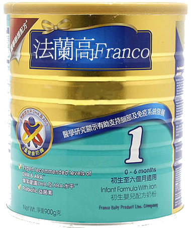</td>";
			table += "<td width='60%'>Franco One is an infant formula for infants 0 - 6 months. <br>Available in 350g, 900g, 1.2kg and 1.8kg.</td>";
			table += "</tr>";
			table += "<tr>";
			table += "<td width='20%'>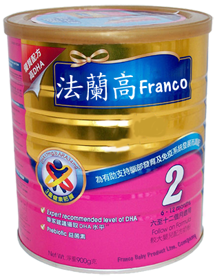</td>";
			table += "<td width='60%'>Franco Two is an milk supplement for infants 6 - 12 months. <br>Available in 350g, 900g, 1.2kg and 1.8kg.</td>";
			table += "</tr>";
			table += "<tr>";
			table += "<td width='20%'>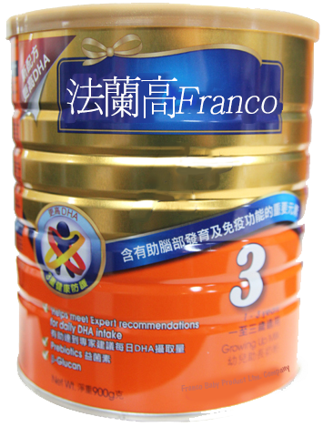</td>";
			table += "<td width='60%'>Franco Three is an milk supplement for childen 1 - 3 years old. <br>Available in 350g, 900g, 1.2kg and 1.8kg.</td>";
			table += "</tr>";
			table += "<tr>";
			table += "<td width='20%'>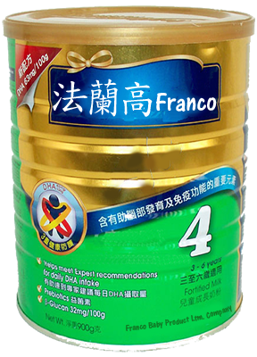</td>";
			table += "<td width='60%'>Franco Four is an milk supplement for childen 3 - 6 years old. <br>Available in 350g, 900g, 1.2kg and 1.8kg.</td>";
			table += "</tr>";
			table += "<tr>";
			table += "<td width='20%'>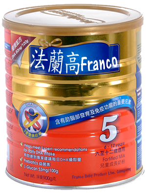</td>";
			table += "<td width='60%'>Franco Five is an milk supplement for childen 6 - 12 years old. <br>Available in 350g, 900g, 1.2kg and 1.8kg.</td>";
			table += "</tr>";
			table += "</table>";
			document.getElementById('sec').innerHTML  = table;
		}
		function babyCare()
		{
			var table = "";
			table += "<table class='product' width='100%' bgcolor='#FFCC66'>";
			table += "<tr>";
			table += "<td width='20%'>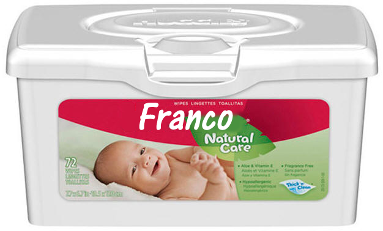</td>";
			table += "<td width='60%'>Tissues clinically proven to be gentle enough forbaby's skin. Biodegradable, can be flushed down the toilet.</td>";
			table += "</tr>";
			table += "<tr>";
			table += "<td width='20%'>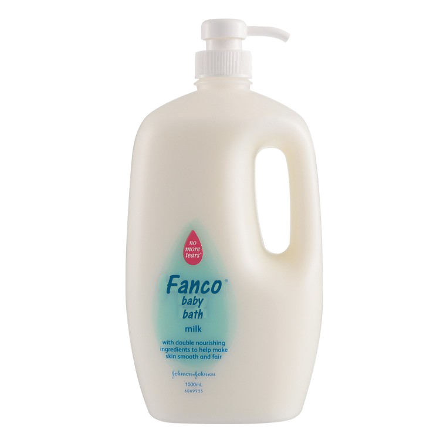</td>";
			table += "<td width='60%'>Alocohl-free shampoo specifically designred for babies. <br>Cleaning baby skins while not irratating.</td>";
			table += "</tr>";
			table += "<tr>";
			table += "<td width='20%'>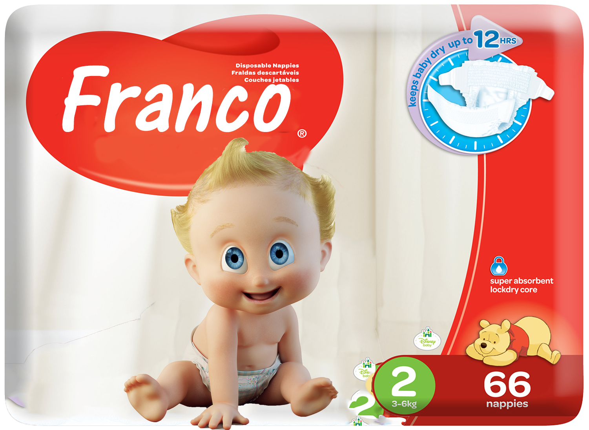</td>";
			table += "<td width='60%'>Clinically proven to be mlid on newborn delicate skin. Specailly designed with wetness indicator that turns blue when your baby pees.</td>";
			table += "</tr>";
			table += "<tr>";
			table += "<td width='20%'>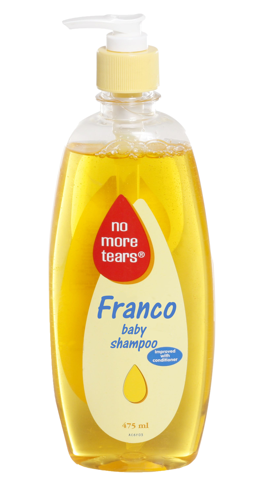</td>";
			table += "<td width='60%'>Moisturizes baby's sensitive skin and help protext from dryness.</td>";
			table += "</tr>";
			table += "<tr>";
			table += "<td width='20%'>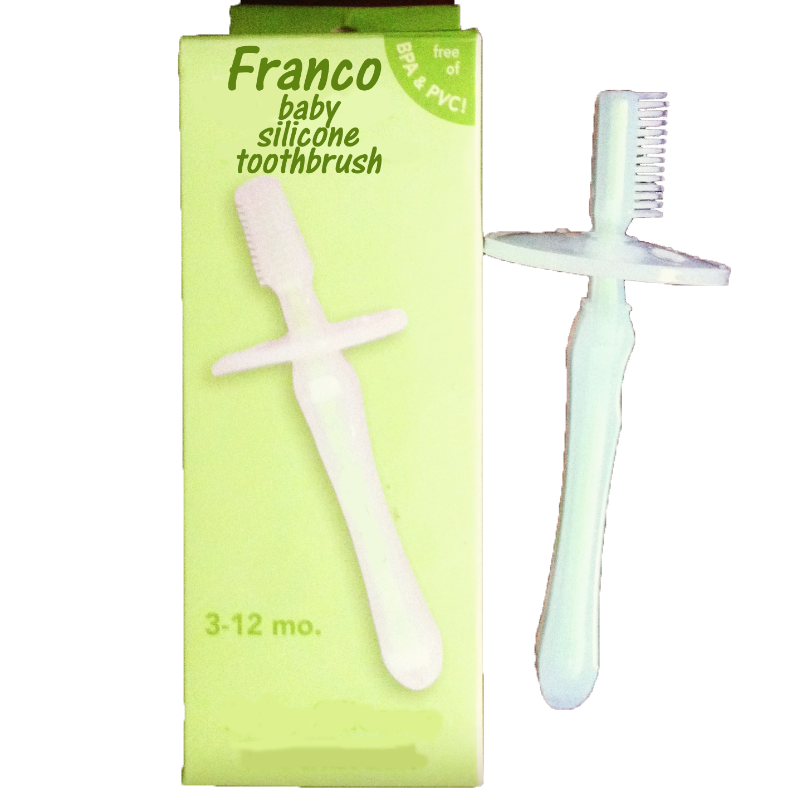</td>";
			table += "<td width='60%'>Nitrosamine free! Keep baby's teeth and gums clean and healthy. Toothbrush with bristles. Silicone coated polypropylene.</td>";
			table += "</tr>";
			table += "</table>";
			document.getElementById('sec').innerHTML  = table;
		}
		function babyToys()
		{
			var table = "";
			table += "<table class='product' width='100%' bgcolor='#99FFCC'>";
			table += "<tr>";
			table += "<td width='20%'>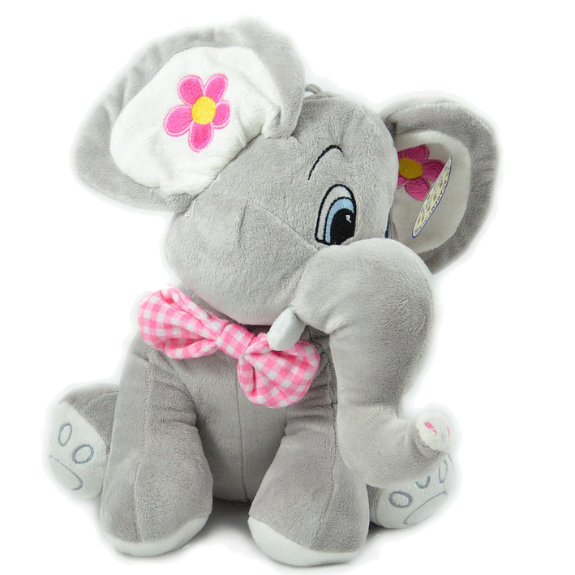</td>";
			table += "<td width='60%'>Elephant soft toy is good at hugging and comforting.</td>";
			table += "</tr>";
			table += "<tr>";
			table += "<td width='20%'></td>";
			table += "<td width='60%'>Have great fun with this cool Thomas Take 'n Play Millie Vehicle. This durable die cast engine features smart magnets that connect either way, allowing you to connect other engines or tender at either the front of back of the engine.</td>";
			table += "</tr>";
			table += "<tr>";
			table += "<td width='20%'>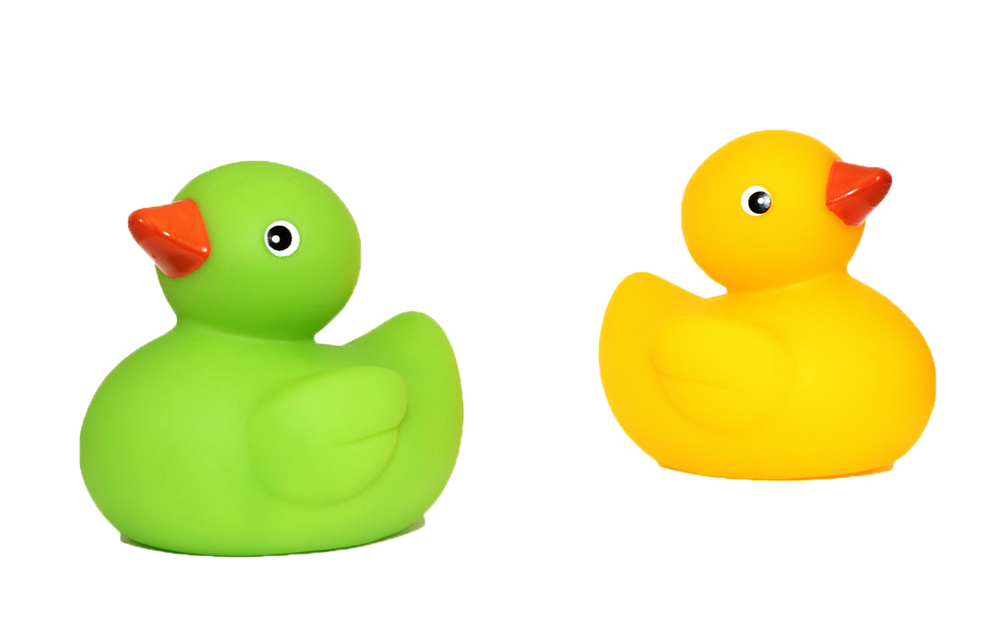</td>";
			table += "<td width='60%'>The adorable small quacking Duck toy is great for young children to create quacky adventures when bathing.</td>";
			table += "</tr>";
			table += "<tr>";
			table += "<td width='20%'>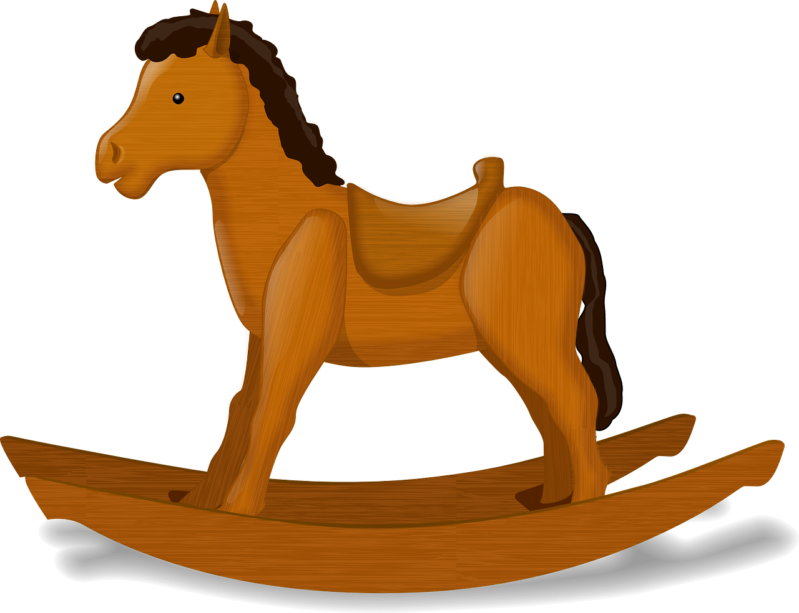</td>";
			table += "<td width='60%'>This is a classic rocking horse that features a contoured seat.</td>";
			table += "</tr>";
			table += "<tr>";
			table += "<td width='20%'></td>";
			table += "<td width='60%'>The world's #1 brain-teasing puzzler is still going strong with billions of puzzling combinations, but only one solution! Scramble the colored squares on this 3-inch by 3-inch puzzle cube. Then, twist, turn, and rotate to match up the colors again on all 9 sides! Can you master the mysteries of Rubik's Cube?</td>";
			table += "</tr>";
			table += "</table>";
			document.getElementById('sec').innerHTML  = table;
		}
	</script>
</head>
<body onload="babyFood()">
</body>
</html>
